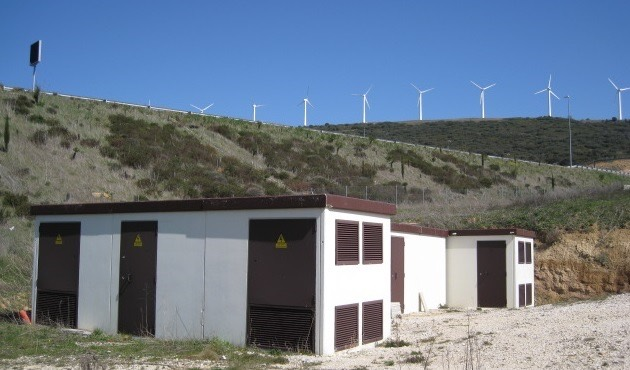

Mantenimiento de centros de transformación En Bizkaia, Gipuzkoa y Álava, hasta 36 kV.
Egondo, empresa instaladora autorizada de Ermua con ingeniería propia, mantiene centros de transformación de industrias, edificios y organismos públicos: revisión general anual, coordinación de la inspección OCA cada tres años, corrección de anomalías y transformador de reserva en caso de avería.
- Celdas y transformadores de cualquier fabricante
- Proyectos y legalizaciones con ingeniería propia
- Al servicio de empresas desde 1967
Solicite una propuesta de mantenimiento
Sin compromiso. Le respondemos en horario de oficina.
Qué incluye
Un contrato, todo el centro
El mantenimiento contratado de un centro de transformación es obligatorio. Lo hacemos completo, para que usted solo tenga un interlocutor.
Revisión general anual
Revisión general del centro de transformación con carácter anual.
Inspección OCA
Coordinamos la inspección obligatoria cada tres años con el Organismo de Control Autorizado.
Corrección de anomalías
Subsanamos las deficiencias del informe y lo comunicamos a Industria.
Reparación y sustitución
Transformadores de tensión e intensidad, fusibles, señalizadores de tensión y otras partes.
Transformador de reserva
Transformadores de potencia que se instalan rápido en caso de avería, también en alquiler.
Termografía del CT
Detección de puntos calientes antes de que provoquen una avería. [CONFIRMAR si se incluye en el contrato]
Normativa
Lo que dice el reglamento
- Mantenimiento
- Contratado con una empresa instaladora autorizada en alta tensión.
- Inspección
- Por un OCA, como máximo cada tres años. El informe favorable permite mantener el suministro.
- Referencia
- Reglamento de instalaciones eléctricas de alta tensión, RD 337/2014 (ITC-RAT 01 a 23).
- Responsable
- El titular de la instalación.
El desconocimiento no exime de cumplimiento.
[validar el resumen normativo con el cliente]

Cómo empezamos
Visita
Revisamos el centro de transformación y su documentación.
Propuesta
Le enviamos una propuesta de mantenimiento con lo que incluye.
Revisiones
Revisión anual, inspección OCA cuando toca y corrección de anomalías.
Preguntas sobre el mantenimiento de CT
¿Es obligatorio el mantenimiento de un centro de transformación?
Sí. El titular de un centro de transformación debe tener contratado su mantenimiento con una empresa instaladora autorizada y pasar una inspección periódica por un Organismo de Control Autorizado (OCA) cada tres años, según el Reglamento de alta tensión (RD 337/2014). El desconocimiento no exime de cumplimiento: no cumplirlo puede acarrear responsabilidades. [CONFIRMAR redacción con el cliente]
¿Qué es una inspección OCA y quién la hace?
Es la inspección reglamentaria que realiza un Organismo de Control Autorizado, una entidad externa e independiente. Su informe favorable permite mantener el suministro. En alta tensión es cada tres años y en las instalaciones de baja tensión que lo requieren, cada cinco. Nosotros la coordinamos y corregimos las anomalías que señale el informe.
¿Qué incluye el mantenimiento de un centro de transformación?
Una revisión general anual del centro (celdas, transformador, protecciones, señalización y seguridad), la coordinación de la inspección OCA cuando toca y la reparación o sustitución de lo que haga falta: transformadores de tensión e intensidad, fusibles, señalizadores de tensión, etc. [CONFIRMAR alcance exacto del contrato tipo]
¿Qué pasa si se avería el transformador?
Disponemos de transformadores de potencia para nuestros clientes que se pueden instalar rápidamente en caso de avería. Si el servicio no está incluido en el contrato de mantenimiento, también se puede alquilar. [CONFIRMAR potencias disponibles y tiempos]
¿Trabajan con cualquier marca de celdas y transformadores?
Sí. Trabajamos con celdas, transformadores y equipos de todos los fabricantes del mercado, como Ormazábal, Schneider Electric, Siemens, Inael o Mesa.
¿Cuánto cuesta el mantenimiento de un centro de transformación?
Depende del número de transformadores, de su potencia y del estado de la instalación. Lo vemos en una visita y le damos un presupuesto cerrado. [PRECIO ORIENTATIVO A CONFIRMAR, si el cliente quiere publicarlo]
¿Trabajan fuera de Bizkaia?
Sí. Estamos en Ermua, junto a la N-634 y con acceso directo a la autopista, a menos de una hora de Bizkaia, Gipuzkoa y Álava. Damos servicio a nivel local, provincial, autonómico y estatal.
Relacionado
Servicios relacionados
Fabricantes
Trabajamos con celdas, transformadores y equipos de todos los fabricantes del mercado: Ormazábal, Schneider Electric, Siemens, Inael, Mesa.